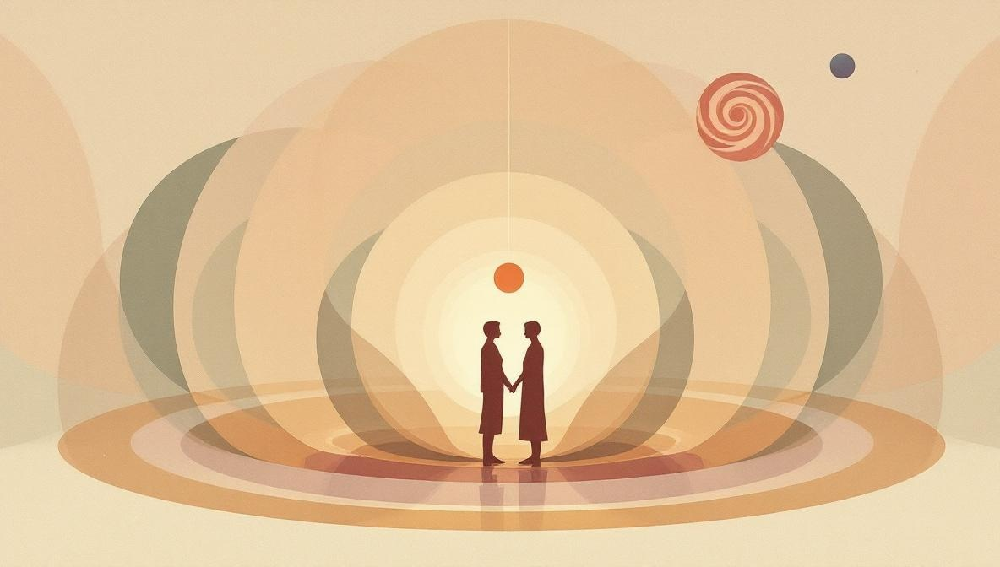

Cos'è l'ottava casa astrologica?
Il tema natale è diviso in dodici case, ognuna delle quali descrive un'area della vita. L'ottava casa è il settore che segue la settima — la casa delle relazioni uno-a-uno — e precede la nona, la casa del significato e degli orizzonti più ampi. Simbolicamente, l'ottava casa si colloca sulla soglia tra il mondo personale (tu e un'altra persona) e il mondo transpersonale (ciò che la vita ti chiede quando vai oltre te stesso).
L'ottava casa è naturalmente associata al segno dello Scorpione e al pianeta Plutone (nell'astrologia classica, a Marte). È una casa d'acqua, il che significa che si occupa di dinamiche emotive, di ciò che non può essere misurato ma è profondamente sentito. Nella lettura psicologica di Howard Sasportas, è la casa di «tutto ciò che non possiamo controllare da soli» — ciò che richiede di attraversare la trasformazione, non di aggirarla.
I significati principali dell'ottava casa
L'ottava casa copre alcuni temi interconnessi. A prima vista sembrano separati, ma condividono un filo comune: situazioni in cui il confine tra te stesso e qualcosa di più grande diventa sottile.
- Trasformazione e rigenerazione. Periodi di cambiamento profondo — la fine di un capitolo della vita, una crisi personale che ti rimodella, la «morte» di un'identità che ne lascia nascere un'altra. È il simbolo primario dell'ottava casa.
- Risorse condivise. Eredità, il denaro del partner, tasse, debiti, investimenti congiunti. Tutto ciò che riguarda denaro e che non appartiene solo a te. È la faccia più concreta, quotidiana dell'ottava casa.
- Intimità e sessualità. Non il sesso come prestazione, ma il sesso come luogo in cui i confini tra due persone diventano permeabili. Lo stesso vale per l'intimità emotiva profonda — lasciare che un'altra persona veda ciò che di solito tieni nascosto.
- Profondità psicologica e inconscio. Ciò che sta sotto la superficie: materiale ombra, motivazioni non dette, eredità familiari emotive più che finanziarie. L'ottava casa è il territorio naturale della psicologia del profondo.
- Potere e crisi. Non il potere sugli altri, ma l'esperienza di sentirsi senza potere e ricostruire da lì. Crisi — di salute, relazionali, finanziarie — che impongono un modo diverso di stare al mondo.
I pianeti nell'ottava casa
Un pianeta collocato nell'ottava casa assume un sapore particolare — la sua energia viene filtrata attraverso trasformazione, intimità e il lato sotterraneo della vita. Ecco una guida rapida alle posizioni più comuni.
| Pianeta | Cosa porta nell'ottava casa |
|---|---|
| Sole | Identità costruita attraverso esperienze profonde. Un senso di sé che ha bisogno di intensità e trasformazione per sentirsi reale. |
| Luna | Sicurezza emotiva legata all'intimità e alla profondità condivisa. Intuizione forte; tendenza ad assorbire gli stati emotivi altrui. |
| Mercurio | Una mente attratta dall'indagine: psicologia, ricerca, misteri, argomenti tabù. Ottimo per il lavoro terapeutico o per professioni analitiche. |
| Venere | L'amore vissuto come fusione, non come leggerezza romantica. Magnetismo forte; relazioni che ti cambiano. Possibili temi di eredità o ricchezza del partner. |
| Marte | Energia diretta verso obiettivi nascosti; capacità di gestire le crisi. Nella tradizione classica, Marte è il governatore naturale dell'ottava casa — una posizione di potere e resilienza. |
| Plutone | Il governatore moderno dell'ottava casa nel suo elemento. Profondità psicologica notevole, attrazione per il tabù e per la trasformazione, periodi di reinvenzione totale. Non drammatica — formativa. |

Cosa NON è l'ottava casa
Molti contenuti online trattano l'ottava casa come la drammatica «casa della morte» o come una garanzia di sofferenza. È fuorviante. Ecco tre cose che l'ottava casa non fa.
Non predice la morte letterale. L'astrologia classica associava l'ottava casa alla mortalità perché si trovava opposta alla seconda (risorse, vitalità corporea). Nell'astrologia psicologica moderna, questa associazione è simbolica: descrive finali e rinascite all'interno di una vita, non il momento in cui una vita finisce. Gli astrologi seri non usano il tema per prevedere quando o come qualcuno morirà — e dovresti diffidare di chi pretende di farlo.
Non ti condanna a relazioni drammatiche. L'energia di Plutone o Scorpione nell'ottava casa intensifica i legami emotivi, ma intensità e dramma non sono la stessa cosa. Due persone emotivamente mature con forti posizioni in ottava casa possono avere un'unione straordinariamente profonda — non turbolenta. La narrativa drammatica è una scorciatoia popolare, non una legge astrologica.
Non funziona in isolamento. Leggere solo l'ottava casa senza considerare l'intero tema porta a interpretazioni caricaturali. Sole, Luna, Ascendente e gli aspetti tra pianeti modificano il significato di qualsiasi singola posizione. Una configurazione «difficile» in ottava casa può essere bilanciata da aspetti armoniosi altrove — e il contrario è altrettanto vero.
Come leggere la tua ottava casa
Se hai una copia del tuo tema natale (puoi generarne uno gratuito su Astrodienst, astro.com), ecco un metodo passo-passo per iniziare a leggere l'ottava casa senza cadere negli stereotipi.
- Identifica il segno sulla cuspide dell'ottava casa. La cuspide è la linea che apre la casa. Il segno che la occupa ti dice lo stile con cui affronti trasformazione, intimità e risorse condivise. Cancro sulla cuspide è molto diverso da Acquario sulla cuspide.
- Elenca i pianeti nell'ottava casa. Ogni pianeta all'interno della casa descrive un tema specifico attivo per te in quest'area. Se non ce n'è nessuno, è normale — vedi la FAQ sulle case vuote.
- Trova il governatore della cuspide dell'ottava casa. Il pianeta che governa il segno sulla cuspide ti dice «dove» l'energia dell'ottava casa si manifesta principalmente per te. Esempio: se la cuspide è Scorpione, il governatore è Plutone — guarda dove si trova Plutone nel tuo tema.
- Controlla gli aspetti. Gli aspetti tra i pianeti dell'ottava casa e il resto del tema mostrano come questa parte di te comunica con le altre. Gli aspetti tesi (quadrato, opposizione) indicano tensione; quelli armonici (trigono, sestile) indicano fluidità.
- Confronta con l'esperienza vissuta. L'astrologia diventa utile quando le letture simboliche incontrano la vita reale. Se una posizione dice «crisi come crescita» ma non hai mai vissuto qualcosa del genere, semplicemente quella parte del tema non si è ancora attivata.
Vuoi una lettura personale del tuo tema?
Holistic Unity ti mette in contatto con astrologi verificati che leggono il tema come un insieme — non a frammenti isolati. Sessioni online, prezzi trasparenti, nessun cliché da oroscopo.
Trova un AstrologoFonti e riferimenti
- Howard Sasportas, The Twelve Houses (Flare Publications, Londra, edizione 1998). Riferimento standard per le letture di astrologia psicologica delle case, inclusa l'ottava.
- Robert Hand, Horoscope Symbols (Para Research / Whitford Press, 1981). Interpretazione classica e moderna di case, pianeti e aspetti, con un'analisi dettagliata dell'ottava casa e dell'asse seconda/ottava.
- Liz Greene, The Astrology of Fate (Samuel Weiser, 1984). Testo di riferimento sul ruolo simbolico di Plutone e dell'ottava casa nell'astrologia psicologica moderna, di matrice junghiana.
- Demetra George, Ancient Astrology in Theory and Practice (Rubedo Press, 2019). Fonti ellenistiche e tradizionali sulle case, utili per comprendere perché l'ottava casa è stata storicamente associata a morte ed eredità.
- Astrodienst (Astro.com) — calcolo gratuito del tema natale e una biblioteca educativa storica sull'astrologia, fondata da Alois Treindl nel 1980. astro.com.
Domande frequenti
Cosa significa avere l'ottava casa vuota?
Avere l'ottava casa vuota è la norma, non un'anomalia: con dieci pianeti distribuiti su dodici case, almeno due o tre case sono sempre senza pianeti. Una casa vuota non significa che quel tema della vita sia assente — significa solo che non c'è un'energia planetaria che lo sottolinea. Per leggere un'ottava casa vuota si guarda il pianeta che governa il segno sulla cuspide (di solito Plutone o Marte) e la sua posizione nel tema.
Plutone in ottava casa è pericoloso?
No, Plutone in ottava casa non è pericoloso. È una posizione che intensifica i temi naturali della casa: profondità psicologica, capacità di trasformazione, attrazione per ciò che è nascosto. Le persone con questa posizione tendono a vivere cambiamenti significativi — relazioni intense, periodi di crisi e rinascita — ma questi sono processi di crescita, non condanne. Il linguaggio drammatico spesso usato online («morte», «distruzione») è interpretazione popolare, non astrologia tradizionale.
Qual è la differenza tra seconda e ottava casa?
La seconda casa governa le risorse personali — quello che guadagni con il tuo lavoro, quello che possiedi, il tuo rapporto con il valore. L'ottava casa governa le risorse condivise — eredità, denaro del partner, tasse, debiti, investimenti congiunti. Sono due lati dello stesso asse: ciò che è mio (seconda) e ciò che condividiamo o riceviamo da altri (ottava).
L'ottava casa parla davvero di morte?
L'astrologia tradizionale collega l'ottava casa al tema della morte, ma non in senso predittivo. Si riferisce alla morte come trasformazione: la fine di una fase di vita, la chiusura di una relazione, una perdita che porta a una rinascita psicologica. Non si usa l'ottava casa per prevedere quando o come si morirà — questo è uno dei limiti etici della pratica astrologica seria.
Come si legge l'ottava casa nel tema natale?
Si guardano tre elementi: (1) il segno sulla cuspide dell'ottava casa, che indica lo stile con cui affronti trasformazione e intimità; (2) eventuali pianeti collocati nella casa, che descrivono temi specifici attivi in quest'area; (3) il pianeta che governa il segno della cuspide e la sua posizione nel resto del tema. Una lettura completa richiede di considerare tutto il tema, non solo l'ottava casa isolata.